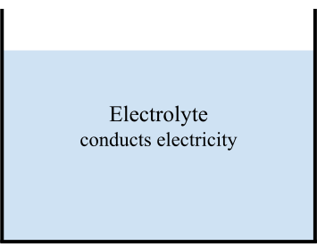

Electrolysis breaks down substances using electricity. That's literally it.
Electrolysis is used in a lot of places. It's how we make aluminium for phones, hydrogen for fuel cells, and chlorine for swimming pools!
Most explanations have two sections: 1) definitions, and 2) setting up the practical. But I think this makes things confusing. Understanding electrolysis is all about understanding the practical . So, we're going to set up the practical step by step, very slowly, and only introduce definitions when we need to.
This explanation is longer than the one in the CGP book for a good reason. After 6 A-Levels and 3 years of University, I can say with confidence that the number one time waster while learning is being confused. With a longer explanation, I can add more detail, answer common questions, and give you review questions.
In other words, a longer explanation helps me explain better to you, and review questions make sure you don't fall behind! Without review questions, you might straddle on and later get really confused. We want to avoid that at all cost.
Let's setup the circuit we need to make electrolysis occur.
We're making an unusual circuit. The circuit is dipped in a liquid called an electrolyte liquid.
The circuit we're making is dipped in a liquid. So we first fill a beaker with an electrolyte liquid of our choice. An electrolyte is a name for something that conducts electricity when in a liquid. The electrolyte can either be molten (melted into a liquid) or dissolved in water. Either way, it conducts electricity.
We use a liquid instead of a solid or a gas because electricity is the flow of ions, and it's much easier to have a flow of ions that create electricity in a liquid than in a solid or a gas.

In part 2 we'll explain how different kinds of electrolytes can produce different substances via electrolysis. But for now, all you have to remember is that we need a liquid that conducts electricity called an electrolyte.
Ok, let's review what we've learnt so far. Please indulge me by answering the questions just below. It'll only take a few seconds – for each question, think about what you believe the answer to be, click to reveal the actual answer, and then mark whether you remembered or not. If you can recall, that's great. If not, that's also fine, just note the correct answer, and continue.